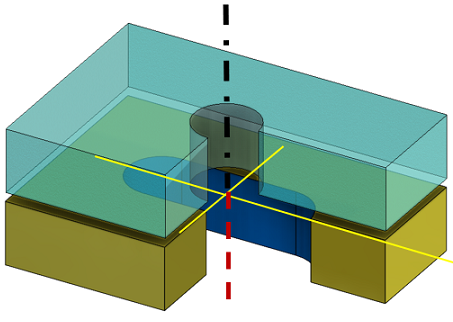
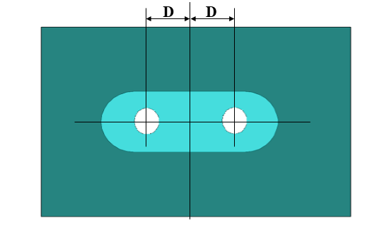
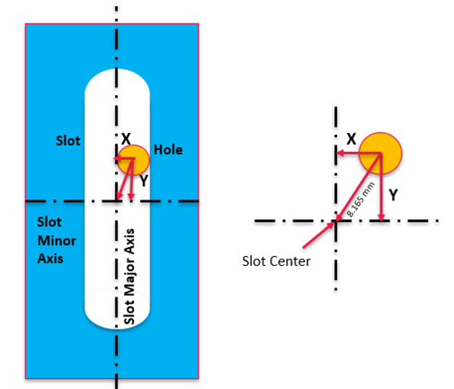
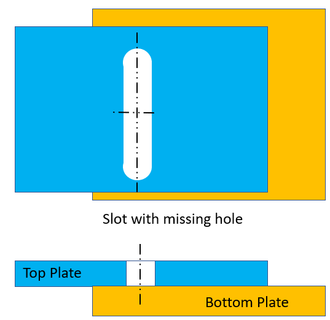
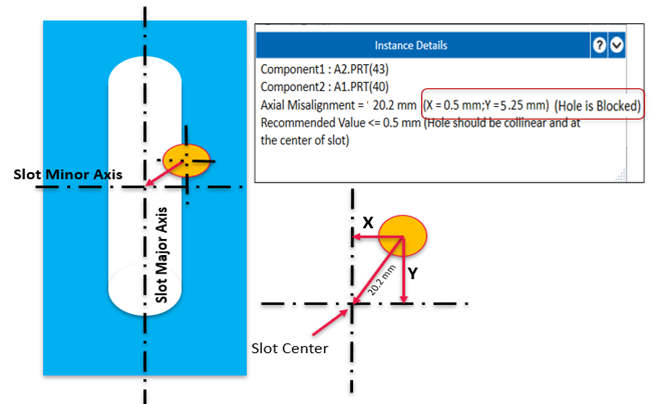
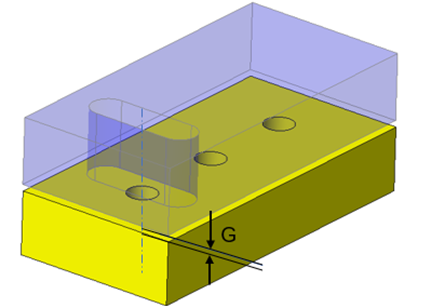
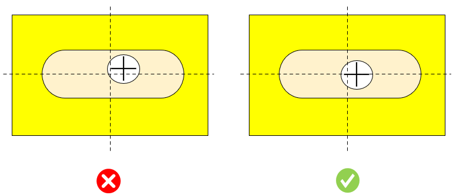
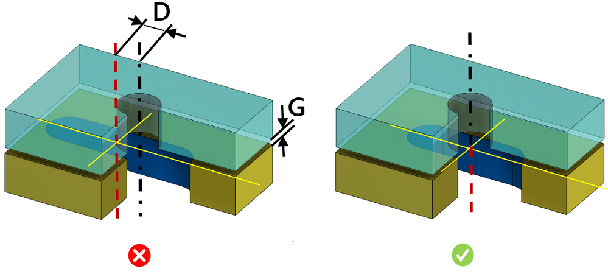

単一の穴を持つスロットの組み合わせでは、穴はスロットと同一直線上にあり、かつスロットの中央に配置されている必要があります。

2つの穴を持つスロットの組み合わせでは、穴はスロットの中心軸に対して対称に配置されている必要があります。

穴とスロットの中心軸がずれていると、組立上の問題が発生します。ねじが正しくはまらないといった不適切な嵌合や、その他の軽微な位置ずれであっても、ねじ山の損傷につながることがよくあります。
このルールでは、次の位置ずれケースをチェックします：

穴が存在しないケース
スロットが存在しているにもかかわらず、対応する穴が存在しない場合、このルールはそれを検出し、穴欠落ケースとして判定します。
ユーザーは、ルール UI の「Ignore Missing Hole Cases」オプションを選択することで、穴欠落の違反を無視することができます。
このオプションは、デフォルトでは選択されていません。

穴が塞がれているケース
スロットの端部によって穴が塞がれている場合、このルールは穴閉塞ケースとして検出し、X および Y の距離値で軸方向の位置ずれを表示します。
ユーザーは、ルール UI の「Ignore Blocked Hole Cases」オプションを選択することで、このような穴閉塞ケースを無視することができます。デフォルトでは選択されていません。

注記:
現在、スロット幅が穴径の 140% 以内にあるスロットと穴の組み合わせが、位置合わせチェックの対象として扱われます。
組立を容易にするため、相手側コンポーネントに関連するアセンブリコンポーネントにおいて、スロットに対する穴の位置および配置を考慮してください。
一般的なガイドラインとして、締結に使用する穴とスロットの位置合わせは、ユーザー指定の値に従う必要があります。
2つのパーツ間のギャップ：穴とスロットが存在するパーツ面同士の距離。

G = パーツ間のギャップ（上の画像に示すとおり、スロットと穴が存在する2つの面間の距離）。
ユーザーは、このチェックボックスを選択することで、下図のように穴軸とスロット中心線が整列しているケースを無視できます。


D = スロットと穴の公差における許容位置ずれ
G = パーツ間のギャップ
注記:
本ルールでは、スロットと穴の位置合わせチェックにおいて、標準穴径データベースで提供される最大穴径以下の穴サイズを対象として扱います。
本ルールは、トップレベルのアセンブリ部品に対して、DFMPro 設定に基づいて実行できます。